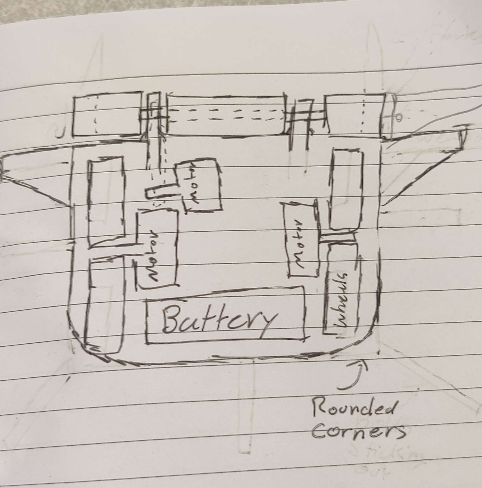
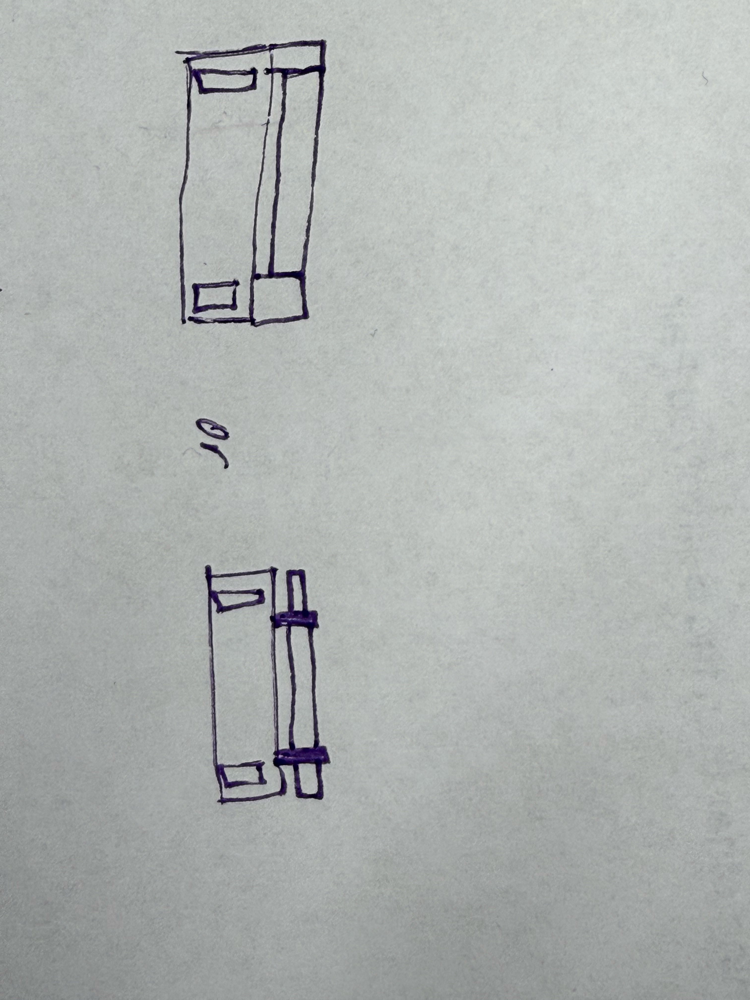

Railside Robotics · It Passed Inspection
A modular combat robot designed to take out the competition
As a team of three, we are developing a drum-style combat robot for Railside Robotics' onboarding compeition.
- Role
- Mechanical and Electrical Designer
- Team
- It Passed Inspection
- Competition
- Onboarding Competition
- My systems
- TBD
09/15/26
Meeting 3
Big Summary
Paragraph 1
Paragraph 2
09/10/26
Deciding the base-level design

While I unfortunately missed this meeting, my partners were able to make a sketch of what we want our bot to look like. The internal sketch has placements for all of our electronics, and also lays out where the wheels will sit. The specific drum end has also been decided here, with us going for a smaller central drum with two mini-drums on the sides.
09/08/26
Meeting 1

We started off the meeting with an introduction and a team-forming activity. We got to learn about all of the different parts of the club, and got a basic task list with onboarding tasks.
After that, there was an icebreaker activity to try to get to know people and find some team members to work with. We ran around talking to people and asking around to fill out a little sheet.
Once that was done, we got to actually form a team and decide what type of robot we wanted to make. Our group decided to make a drum-style robot, because it we would be able to make it work upside down and try something brand new as a part of it.
04
Mobility and scoring
Custom chassis and rotating turret


I designed the drivetrain using a parallel-plate structure rather than a standard rectangular kit chassis. This gave us direct control over the robot’s dimensions and mounting points while retaining the sideways and diagonal movement provided by Mecanum wheels.
I also assisted with the turret, which received artifacts from the transfer and launched them into the goals. Independent turret rotation separated aiming from driving and gave the team more flexibility in how the robot approached a scoring position.
05
Team leadership
Coordinating a 15-person build

As team captain, I was responsible for more than my own CAD work. I helped keep the mechanical, programming, documentation, and outreach efforts moving toward the same competition deadlines.
The season built on my previous experience with Excalibur during INTO THE DEEP. That continuity helped me recognize where clearer subsystem ownership, modular construction, and earlier integration testing could improve the team’s process.
06
Outreach
Using the team to build another

Excalibur hosted a week-long robotics camp for middle-school students. The camp introduced FTC-style design and programming while raising money to support a new team through Fort Mill 4-H.
Teaching the material forced us to explain decisions that had become automatic within our own team. It also extended the season’s impact beyond a single robot or competition result.
07
Season results
Excalibur advanced through the Upstate Qualifier and South Carolina State Championship before competing at the Carolinas Premier Event.
Upstate Qualifier
Inspire Award
State Championship
Control Award
Postseason